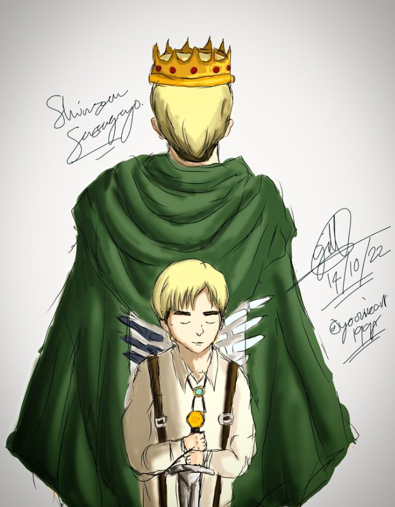
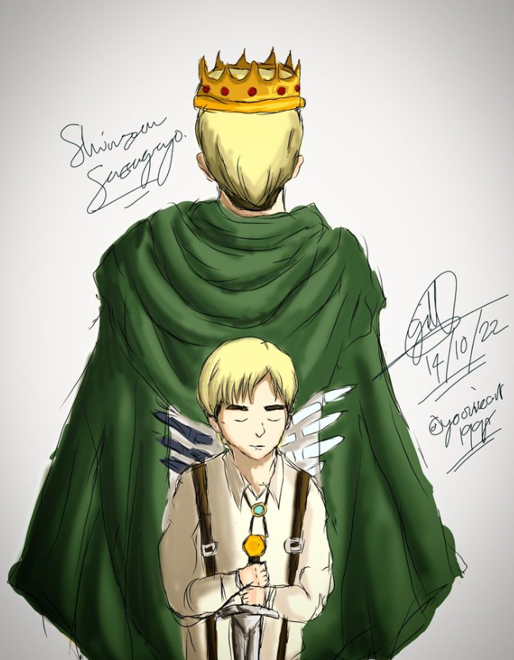
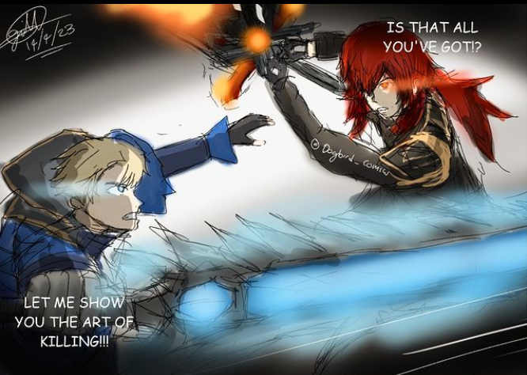

Hi, Gillian Here.
Welcome to my art gallery and my personal website for art-related basis.
ABOUT ME
My name is Gillian, just living in a normal life and welcome to my art gallery. As a student, I worked as a professional artist. I started drawing at a very young age to pursue my passion for making different projects through art as I allow myself. So here is my interactive website of my artworks in this portfolio website.
I started my art career ever since at the very young age. And back then it got my attention since I have a full interest of making artworks as my hobby. And even whenever I watched a random show or a series that I am interest in , I kinda like wanted to make an artwork out of it. Because it gave me much interest to make them. In the end, It became my hobby and inspired me well.
And at the current, I started to post my drawings on instagram in every free time when I wanted to. But suddenly stopped due to projects and assessments since it is way getting complicated and too busy to make artworks. And since I planned to make this portfolio website, here are my iconic artworks that will get everyone's attention.
ICONIC ARTWORKS
 

Here are the digital sketches which is very iconic in my art gallery. The softwares that I am usimg in these artworks is autodesk sketchbook. Since that's the only drawing app I know in softwares. It got anyone's attention after I created them. the first artwork is from the Star Wars series which is the Mandalorian. The second artwork is the Game of thrones artwork which is just the original character of mine that is originally made. And the third artwork, is Erwin Smith and his younger self from Attack on Titan series.
An artwork that got anyone's attention, this mini comic I made a battle between two universes. Alucard against Diluc Ragnivndr.
Here are the bonus sketches, basically called the inky artworks. There are sketches that is been drawn in months and some of them are from last year.
Shilhuotte artworks

Here are the minimal artworks, they're all in shadows, no faces and not much designs just the figures of their body and the background colors.
Skills
Other skills than sketching as a skill, usually I also make a photo editing with art. I used to take pictures on random places even at home. I customize them with inspirations and other things.
Instagram accounts
Here are my art accounts where i posted them
- @cosm_ink00 - Gillian's Inky works
- @dwnscrpnx - GM draws
- silentwolf_art05 - Gillian's sketchbook